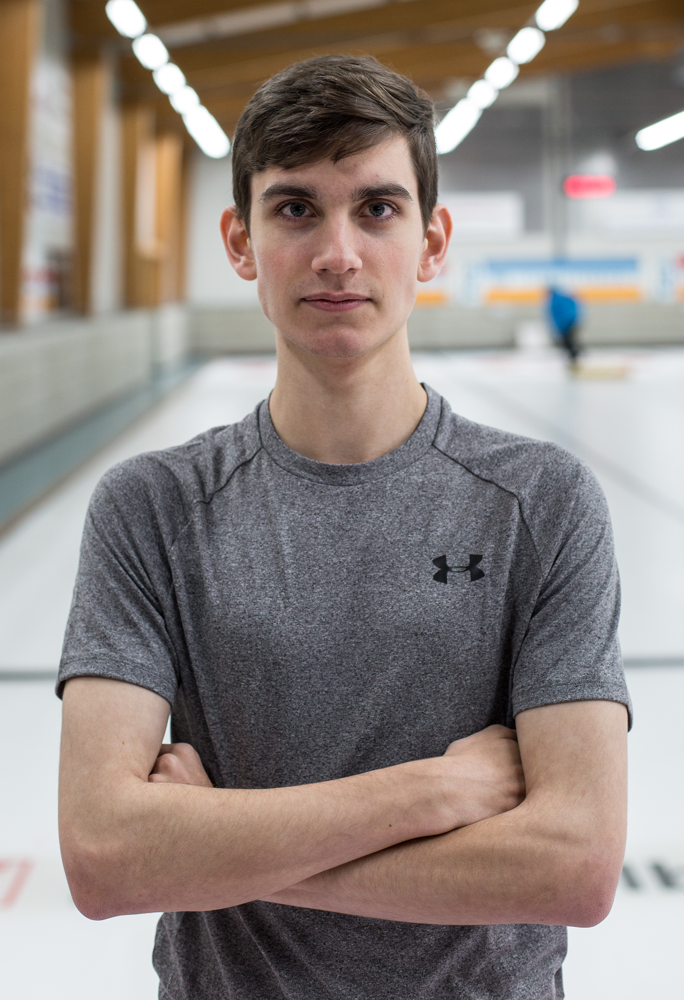

Kurz vorgestellt
Ich bin ein zuverlässiger, motivierter und aufgestellter Mensch.
Aktuell besuche ich das zweite Lehrjahr als Informatiker EFZ, Fachrichtung Applikationsentwicklung in der WISS Zürich.

m
Willkommen auf meiner Website. Mit dieser Seite möchte ich mich gerne vorstellen.
Auf der Startseite sehen Sie, wer ich bin und was ich so mache. Wie bisherig mein schulischer und beruflicher Werdegang abgelaufen ist, entnehmen Sie meinem Lebenslauf.
Ich bin ein zuverlässiger, motivierter und aufgestellter Mensch.
Aktuell besuche ich das zweite Lehrjahr als Informatiker EFZ, Fachrichtung Applikationsentwicklung in der WISS Zürich.
In meiner Freizeit spiele ich seit 6 Jahren Gitarre und lese ab und zu Bücher.
Dazu betreibe ich seit 13 Jahren Curling und spiele in der höchsten Juniorenliga der Schweiz. Wir werden in dieser Saison diverse internationale Turniere bestreiten können.
In meiner Freizeit verbringe ich viel Zeit am Computer. Nicht etwa mit Videospielen, sondern mit meinem Texteditor.
Seit den Sommerferien lade ich einiges, was ich gemacht habe, auf Github hoch. Dort sind HTML Templates, meine Webseiten, Atomthemes und einiges anderes bezüglich diveresen WISS Modulen hochgeladen.